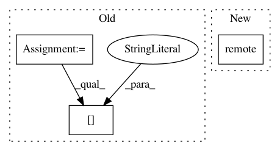

1e39c403709b96d0bfa9c139e927441acc232426,python/ray/tests/test_placement_group.py,,test_capture_child_tasks,#Any#,796
Before Change
// Make sure all the actors are scheduled on the same node.
// (why? The placement group has STRICT_PACK strategy).
node_id_set = set()
for actor_info in ray.actors().values():
node_id = actor_info["Address"]["NodeID"]
node_id_set.add(node_id)
// Since all node id should be identical, set should be equal to 1.
assert len(node_id_set) == 1
def test_ready_warning_suppressed(ray_start_regular, error_pubsub):
After Change
assert None not in pgs
// Test if tasks don"t capture child tasks when the option is off.
t2 = create_nested_task.options(
num_cpus=0,
num_gpus=1,
placement_group=pg,
placement_group_capture_child_tasks=False).remote(0, 1)
pgs = ray.get(t2)
// All placement group should be None because we don"t capture child tasks.
assert not all(pgs)
In pattern: SUPERPATTERN
Frequency: 3
Non-data size: 3
Instances
Project Name: ray-project/ray
Commit Name: 1e39c403709b96d0bfa9c139e927441acc232426
Time: 2020-09-27
Author: rkooo567@gmail.com
File Name: python/ray/tests/test_placement_group.py
Class Name:
Method Name: test_capture_child_tasks
Project Name: ray-project/ray
Commit Name: 2298f6fb40cb6d348b5b48593c93cdd58ddd1f29
Time: 2020-04-23
Author: ekhliang@gmail.com
File Name: rllib/execution/replay_ops.py
Class Name: StoreToReplayBuffer
Method Name: __call__
Project Name: ray-project/ray
Commit Name: d3c310f40877f55186bf43c1b5b164713d76ab1c
Time: 2020-04-07
Author: ed.nmi.oakes@gmail.com
File Name: python/ray/serve/api.py
Class Name:
Method Name: create_backend